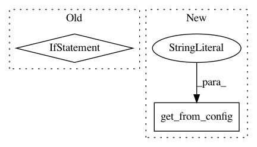

1d7b7345ab3254ed9b450dbd4208a3d63cb4963f,dataset/models/tf/linknet.py,LinkNet,_build,#LinkNet#,17
Before Change
net = self.upsampling_block(dim, net, 64, "upsampling-3", b_norm, **kwargs)
layout = "cna" if b_norm else "ca"
layout_transpose = "tna" if b_norm else "ta"
net = conv_block(dim, net, 32, 3, layout_transpose, "output_conv_1", 2, **kwargs)
net = conv_block(dim, net, 32, 3, layout, "output_conv_2", **kwargs)
After Change
dim = self.spatial_dim("images")
enable_batch_norm = self.get_from_config("batch_norm", True)
n_filters = self.get_from_config("n_filters", 64)
n_blocks = self.get_from_config("n_blocks", 4)
conv = {"data_format": data_format}
batch_norm = {"momentum": 0.1,
"training": self.is_training}
In pattern: SUPERPATTERN
Frequency: 3
Non-data size: 2
Instances
Project Name: analysiscenter/batchflow
Commit Name: 1d7b7345ab3254ed9b450dbd4208a3d63cb4963f
Time: 2017-11-09
Author: a.kozhevin@analysiscenter.ru
File Name: dataset/models/tf/linknet.py
Class Name: LinkNet
Method Name: _build
Project Name: quiltdata/quilt
Commit Name: b4cb0c14ebf600daa5573bc90a419eb24329eb55
Time: 2019-06-05
Author: aleksey@residentmar.io
File Name: api/python/quilt3/packages.py
Class Name: Package
Method Name: build
Project Name: analysiscenter/batchflow
Commit Name: 2a5415f61c74d44b6846507b556eb247079c7096
Time: 2017-10-13
Author: rhudor@gmail.com
File Name: examples/simple_but_ugly/tf_models.py
Class Name: MyModel
Method Name: _build